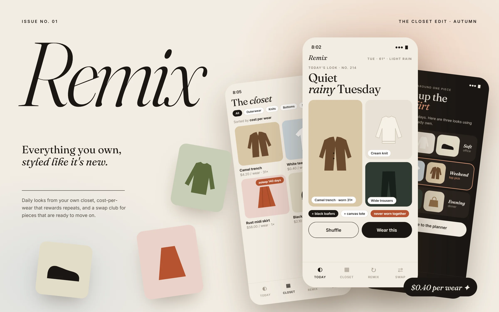
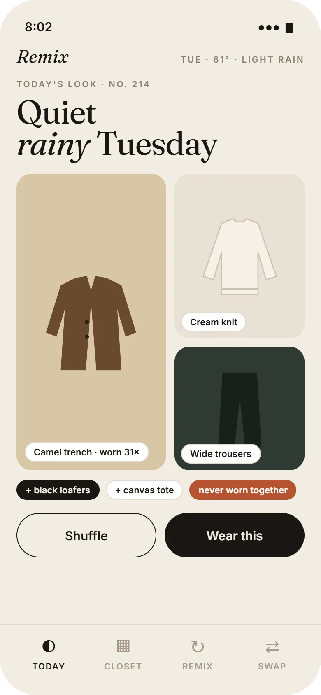
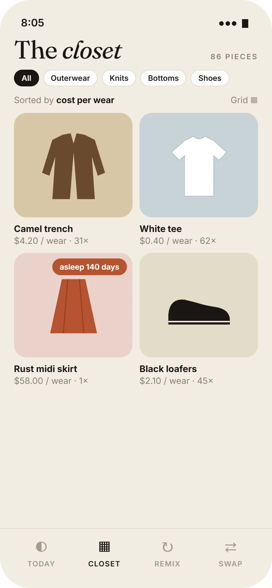
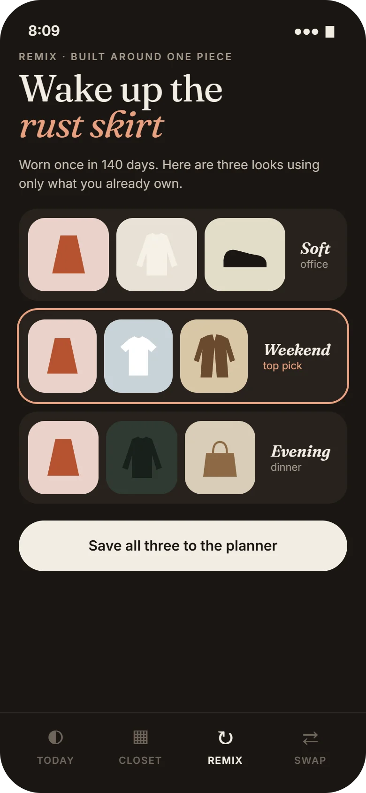
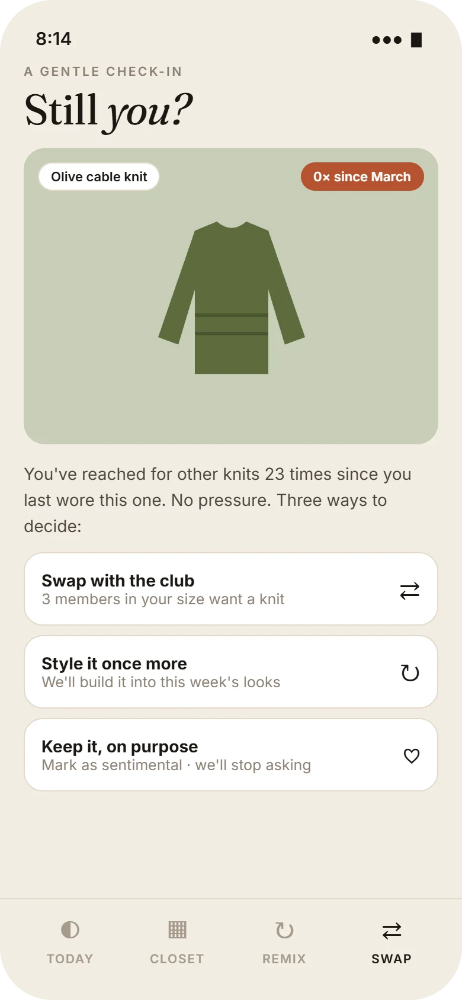
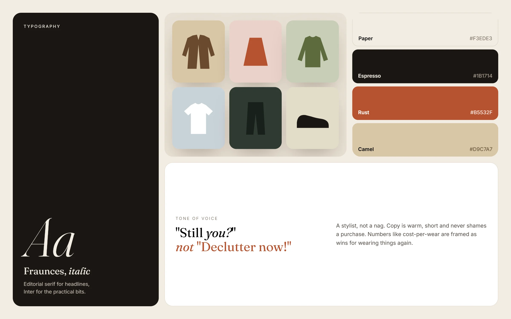

A closet app with the soul of a fashion magazine: wear what you own, beautifully.
Type
Self-initiated concept
My role
Solo: concept, art direction, UX and UI
Platform
iOS app
Mood
Cream paper, italic serif, quiet confidence

Concept projectAn art-direction-led exploration. I didn't run research for it; the problem framing uses one published source (cited below), and the closet archetypes are assumptions to test. All garments and numbers in the screens are illustrative.
Overview
The short version
Context
A full closet and "nothing to wear" is a near-universal feeling. Clothes are worn fewer times than they used to be: the Ellen MacArthur Foundation reports that the number of times a garment is worn before it stops being used fell by about 36% over 15 years1.
Problem
Closet and resale apps tend to be either spreadsheets of clothes or shopping feeds in disguise. Neither makes the clothes you already own feel exciting again.
Solution
A closet edited like a magazine: a daily look from what you own, cost-per-wear that celebrates repeats, remixes built around forgotten pieces, and a gentle "still you?" check-in that leads to a swap club.
Deliverables
Art direction and mood board, 4 high-fidelity screens, a garment illustration system, tone of voice, two design decisions and a test plan.
The most sustainable piece is the one already in your closet.
So Remix never opens with a shop. It opens with an outfit, made only from things you own.
Four closets
Who it's for
Archetypes, not research personas: four relationships people have with their clothes, each with something Remix offers them.
i.
The Repeat Wearer
Same ten pieces, every week.
Remix offers: new combinations from the other seventy.
ii.
The Haul Regretter
Tags still on. Again.
Remix offers: cost-per-wear, so wearing beats buying.
iii.
The Curator
I want a capsule, not a pile.
Remix offers: gentle check-ins on pieces that don't fit their style anymore.
iv.
The Swapper
I'd trade if it were easy.
Remix offers: a swap club matched by size and taste.
Big idea
A stylist, not a nag
i.
Style before shopping
Every surface starts from what you own. There's no shop tab, by design.
ii.
Celebrate repeats
Cost-per-wear drops every time you wear something, turning outfit repeating into a win.
iii.
Never shame a purchase
Forgotten pieces get a curious "still you?", never "declutter now". Keeping something on purpose is a valid answer.
The features
Four pages from the issue
01 · Today's look
An outfit, set like a magazine spread

A
A headline for every day"Quiet rainy Tuesday" comes from the weather and your calendar, numbered like an issue (No. 214).
B
Editorial gridThe hero piece gets the tall frame; supporting pieces stack beside it.
C
"Never worn together"A small rust tag points out combinations that are new to you.
D
Two choicesShuffle or wear it. Wearing logs the outfit and lowers each piece's cost-per-wear.
02 · The closet
Sorted by value, not by date bought

A
Cost-per-wear on every pieceThe white tee at $0.40 per wear is the quiet hero of the closet.
B
"Asleep" instead of "unused"A softer word for a piece that hasn't been worn in a while, and a hint that it can wake up.
C
Illustrations, not photosFlat garment drawings keep the grid calm and make adding items quick: pick a shape and a color.
03 · Remix
Three looks around one forgotten piece

A
The one page in dark modeRemix is the "evening edition": a dark page signals that this is the creative part of the app.
B
Named by occasionSoft office, weekend, evening. Words people use when getting dressed.
C
One top pick, outlinedGuidance without taking the choice away.
04 · Still you?
Letting go, gently

A
A question, not a verdict"Still you?" leaves the answer with the person.
B
Context without guilt"You've reached for other knits 23 times" explains the nudge without blaming.
C
Three equal pathsSwap it, style it once more, or keep it on purpose. Keeping is a valid answer, and the app stops asking.

Mood board · The closet editFraunces italic, warm paper, a garment illustration system and a tone of voice that sounds like a good stylist.
Visual language
Quiet luxury, on a phone
The look borrows from print fashion magazines: generous margins, a high-contrast italic serif, a muted palette of natural dyes, and one accent, rust, used only for things worth noticing.